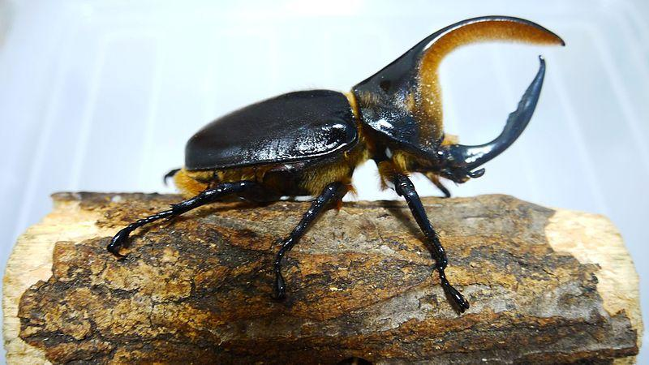
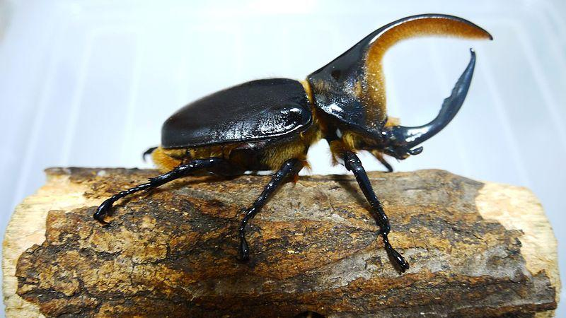
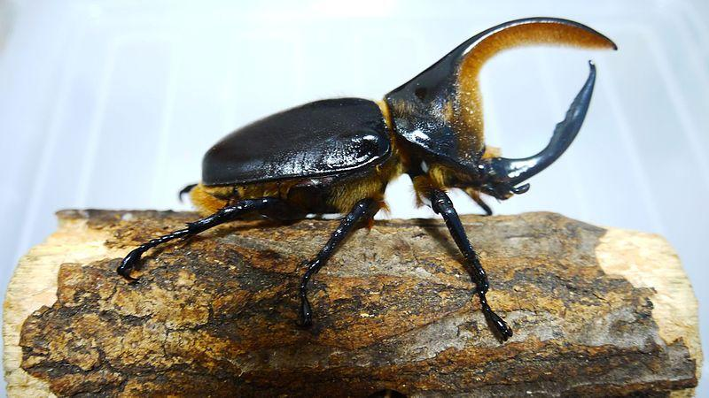

los animales y su ecosistema
imagenes
siguiente veras como los animales viven dia a dia en su ecosistema conviviendo con mas animales.
 



La biodiversidad y funcionamiento de los ecosistemas no solo dependen del número de especies que habitan en ellos, sino que están determinados en gran medida por las relaciones o interacciones que se dan entre los organismos de distintas especies, y pueden aportar distintos beneficios a las poblaciones humanas, a través de los llamados servicios ambientales (regulación del clima, suministro de agua y alimentos, culturales y estéticos). Para facilitar la comprensión de las interacciones entre las especies, éstas se han clasificado en positivas (mutualistas), es decir, que pueden beneficiar a las especies interactuantes, o negativas (antagonistas), que pueden ser dañinas para los participantes, tales como como el parasitismo, la herbivoría y la depredación de semillas, entre otras. También existen relaciones en las que existe un efecto neutro para uno de los participantes (comensalismo/amensalismo), por ejemplo, la relación entre las orquídeas o bromelias que viven sobre los troncos de los árboles, y que obtienen nutrientes sin dañar al árbol que las hospeda. Ejemplos conocidos de relaciones planta-animal incluyen la dispersión de las semillas de las plantas, ya que muchas especies de plantas requieren que sus semillas germinen lejos de la planta madre y los animales pueden cumplir esta función al transportarlas a sitios adecuados de germinación, ya sea que las ingieran y excreten, las transporten pegadas a su pelaje/plumas o que las transporten de forma secundaria (p.ej. hormigas). La fitofagia o herbivoría es un antagonismo importante que consiste en la ingesta de tejido vegetal de las plantas por parte de los animales, que, en casos extremos puede mermar poblaciones enteras de plantas, limitar su establecimiento o incluso, ciertos insectos pueden crecer exponencialmente convirtiéndose en plagas, con repercusiones para el ser humano, particularmente si se trata de plantas de importancia agrícola, alimenticia o forestal. Por último, la polinización es una interacción planta-animal muy importante pues permite la reproducción y crecimiento poblacional de muchas especies de plantas, además de que provée servicios ecosistémicos y beneficios a la humanidad por las plantas cultivadas, particularmente las de valor alimenticio o agrícola. Otra interacción muy interesante en la naturaleza es la que ocurre entre las plantas y las hormigas, donde éstas últimas defienden a la planta de sus herbívoros mientras que las plantas a cambio ofrecen alimento (ej. néctar en hojas y tallos) y refugio a las hormigas.
mas sobre esta INFORMACIONsiguiente veras como los animales viven dia a dia en su ecosistema conviviendo con mas animales.
